I was crouched beneath the underpinning of the east deck, staring at a fungus that had, in four short years, firmly entrenched itself along the center of the ledger beam lag-screwed to the house. The point of my pocketknife confirmed what I'd suspected: The treated beam, despite its appearance, was essentially sound. Too bad I couldn't say the same for the structure's band joist. Where I could get the thin blade behind the warped ledger, the 2 X 8 rim was soft and pecky--leaving little reason to believe that the rest of the board wasn't damaged as well.
After duck walking the 10 feet or so to daylight, I looked over the house site. A stand of old-growth evergreens on a slope that leveled out at the deck's edge. No gutter on the roof fascia above. Moving over to the railing and dropping an old Buick bearing ball onto the top of the platform, I watched as the steel ball rolled a lazy line toward the side of the house.
What I'd discovered, of course, was something that occurs all the time--a poorly planned deck installation. Oversights aren't premeditated, so I suppose the real "crime" is that it wouldn't have cost much more to do the job right the first time-certainly far less than it would to do it again.
In this case, the evidence was plain: The beam connecting the deck to the house was installed without metal flashing, which would have directed water away from untreated wooden members. Haphazardly spaced lag screws were on the verge of losing their grip in several spots. An eastern exposure, shaded by trees for a good part of each misty morning, encouraged condensation. And finally--the kiss of death--the unguttered roof worked hand in hand with a deck pitch that sent water toward, rather than away from, the house wall.
Code of Conduct
Imagine a deck as being the floor of a house without the walls attached. The structure must be able to support its own weight plus that of people and any furniture. That means the support posts should be sized and mounted properly, the beams set in the right places and the joists sized and spaced according to load. That, in a word, means planning.
A great place to start is with your local residential building code handbook. I paid $2 for our newest state-published text, which includes 134 pages of explanation, amendments and detail drawings. Individual counties may adopt specific requirements, but, broadly speaking, the code book offers two things in one neat package: the regulations (so you won't be in violation because of some neglected detail, even if you intentionally overbuild the structure) and some clear illustrations of various building techniques (which clarify, in many cases, what's being described).
It shouldn't be too difficult to request variations from the code for specific reasons, but be forewarned that changes may have to be approved by a structural engineer. Those who want some structural references for planning should consult an engineering text or reference manual. From the Walls In by Charles Wing ($14.95, Atlantic-Little, Brown Co.) contains an excellent section for beginners on understanding the elements of structural analysis.
Pier-Group Pressure
For our purposes let's assume all decks have three parts: the foundation, made up of the piers and posts; the framing, including beams, joists and decking boards; and what I'll call the details--necessary extras such as railings, steps and benches.
Over the long term, the foundation is the most important because it supports the whole works. The foundation members can be designed for an attached deck (in which the platform is bolted to the house on one or more sides) or a freestanding structure, separated from the house by an inch or more.
The number of posts needed depends on the size of the deck, or more specifically on the length of clear (unsupported) span between each post. This in turn depends on the dimension of the beams being used to frame the platform. The size of the posts, in depth and width, should increase as they get longer, or as they bear the greater "tributary" weight of a larger beam-an engineer's way of saying that a stronger girder will channel more stress to fewer posts.
In specific terms, a 4 X 4 post placed every 8' is OK if the exposed portion isn't over 8' in height and if the rest of it extends 2' into the ground. But the same post supporting a 12' section would be near capacity; it should be upgraded to a 4 X 6.
However, at a 14' height and the same span, a 4 X 6 is too small. just as a tape measure is at greater risk of bending as it's extended, a post is more susceptible to buckling as it gets longer. Hence, decks over 20' off the ground generally need the blessing of a professional.
Piers or footings are the solid anchors that posts need to remain in place. A pillar imbedded in the ground should have 20% of its total length buried, or no less than 2'. If a concrete footing is poured, it's supposed to be at least 8" deep and four times as wide as the broadest side of the post. Occasionally, a block wall might be used as an anchoring point; in this case, the cores in the block should be filled with concrete and reinforcing bar.
Most people think of the deck framing as the platform itself, but where it's really happening is underneath the planks. The framework is the skeleton of the structure, and, like the bones of the body, it determines what the surface will look like.
If, for example, straight planking doesn't suit your taste, you might prefer a herringbone or alternating pattern. But you've got to know in advance how far apart to space the deck joists (the ribs that hold the platform "skin" in place) to determine how wide to make each section. Joists spaced 16" or 24" on center are common; 12" to 16" spacing is needed when 1-by (3/4" thick) or any diagonal decking is used.
My code book says that decks "shall be designed for a live load of 40 pounds per square foot"--the same figure given for house floors. (Decks larger than 100 square feet are boosted to a 60-psf limit.) Live load is the weight of everything but the building materials themselves; to put things in perspective, a 10' X 10' deck should support two well-distributed tons, or twenty-five 160-pound friends standing roughly shoulder to shoulder.
If you take a look beneath your house sometime, you'll see what that means in lumber: a line of 2 X 10s fastened between a rim joist and a girder or another perimeter joist. By the same method, 2 X 8s would more likely represent a 30-psf capacity.
How those boards are put together is a whole different story. The conventional method is to frame the entire platform with a doubled 2-by perimeter and hang the joists in between. They can be nailed to the rims on a ledger strip or connected with galvanized-steel joist hangers.
In some situations, the joists might rest on a girder made of two 2 X 10s fastened side by side. This beam doesn't necessarily have to be at the unattached end of the platform but can be positioned back by several feet so the deck is cantilevered slightly. Usually, it's set parallel to the end of the platform, with the joists running across it.
The part of the perimeter connected to the house--the ledger beam-may be the most critical member of the framing. That board must be pressure treated for aboveground use, and unless the band on the house is treated, it also has to be covered with flashing to keep water away from the unprotected wood. If the ledger is attached to masonry or concrete, it should be treated for ground-contact use but doesn't need a flashing.
Be aware that many building codes require that, when connected, the deck and structure beams touch each other, with no siding or blocking in between. That ledger beam is bolted to the house with nuts and washers, their size and spacing being determined by the joist span.
If, for example, your deck extends 16' from your back door, you'd want to use 1/8" galvanized bolts placed 20" apart, or use 1/4" bolts spaced 2' apart and a vertical row of three 12-penny nails every 6". A connection to brick is a bit different, since no nails are used. Here, 3/4" bolts are used every 16", attached through the veneer and the band joist behind it. One precaution: If the band joist is parallel to the other floor joists, it should be strengthened with solid blocking or cross bridging every couple of feet along its length, with the braces attached to the adjacent joists.
A freestanding deck eliminates all the trouble of bolting, flashing and water drainage, but it brings up new concerns. Diagonal 2 X 6 cross bracing might be needed for stability on decks standing taller than 4' or so. Knee braces--4 X 4s bolted diagonally across the corners where the posts meet the perimeter joists-are another option when the posts are large.
One meet-in-the-middle approach may be acceptable; that's to attach the deck, but to use nylon or plastic-pipe collars around the bolts as spacers to separate the ledger beam from the house. The connection is sound, and water can run off without puddling.
The rest of the deck framing will shed moisture easily if it's set up right. Some builders pitch the far end of the platform slightly--no more than 1/2" in 10'--for drainage, but this is really necessary only with porchtype tongue-and-groove decking. Normally, drainage is ensured with round-edged deck planks spaced 3/16" apart (about the width of a 16-penny nail) and held down with at least two nails per joist.
Too, all deck lumber should be either pressure treated or of a decay-resistant species such as redwood. Any wood in contact with the earth or concrete must be listed for belowground use. If you use untreated lumber, you can afford some protection to the joists and other problem areas with silicone caulk and simple cap flashing made from strips of thin-gauge galvanized sheet metal. This is especially true at the top of doubled beams, where water would otherwise gather in the seam.
At a certain point, you may face an option which could make your life easier. Where I live, any deck or platform less than 3' off the ground doesn't need a railing. Eliminating that part of the structure can free up funds for upgrading other parts of the deck and may even improve appearance in some cases.
Strategically placed backless benches can define the deck's edge, or--from the other view--benches and rails can be built as one. Generally, railings are set between 30" and 38 " high and are fastened to stanchions and balusters for support.
There are several ways to accomplish this, but one method that's simple and produces a sturdy rail is to bolt the stanchions directly to the outside of the perimeter joists no farther than 6' apart, and to nail the balusters between at an equal spacing of 10" to 24".
Since the decking planks usually extend beyond the perimeter by I" or so, the up rights or decking may need to be notched, or else both can be nocked to an even depth to make what's called an edge crosslap joint. After the railing cap is fastened to the stanchions, the balusters can be installed. They, too, can be nailed to the perimeter's face or to a horizontal barrier board attached several inches off the deck between stanchions.
For a more secure anchor, railing stanchions can be made from 2 X 6s turned edgewise and bolted through the deck planking to the joists below. This asks for a bit of planning, both for spacing and because those stanchions perpendicular to the joists need to be mounted on solid blocking fastened within the joist space and sized to match the joists. Two 5/8" galvanized bolts will hold each stanchion securely.
Steps require a bit more calculation and may be needed for a deck with limited access. First, some guidelines: Stringers, the supports for stair treads, are made of 2 X 10s or 2 X 12s spaced between 30" and 36" apart. They can be notched to seat the treads and form the risers (the vertical part of the step) or cleated with 2 X 4s on the inside to support the treads alone.
One accepted tread-to-riser ratio is 2:1 -12" treads and 6" risers. Normally, though, a range is provided for each to ease the pain of calculation, so tread width might fall between 10 " and 12 " and riser height between 5 1/2" and 8 1/4" Notched stringers sometimes have closed risers; to encourage drainage, those boards can be fitted to fall just short of meeting the treads.
Deck stairs use 2-by treads almost exclusively, so appropriate-width planking is cut to slightly overhang the stringers at the sides. The front of each tread is allowed a projection of I" to 1 1/4" called nosing, but this isn't included when cutting out the notches in the stringers. It's critical that at least 3 1/2" remain between any notch point and a line drawn perpendicular to the lower edge of the stringer plank.
Ideally, the stair should rise at a "preferred angle"--between 300 and 35". There are a series of formulas used to calculate this and the tread-to-riser ratio on a finished surface, but we'll just go through the basics to get a start in the right direction.
First, measure the rise-the vertical distance between the deck surface and the ground. On a slope, you'll have to add any vertical drop to the rise to take into account about where the stair will end.
Then, divide the rise by seven and drop any fraction to determine the number of risers. (Trust me!) That number divided into the rise gives the exact height of each riser. To figure the bearing width of the treads subtract that height from 18. (Still with me?) This number, when multiplied by one less than the total number of risers, will yield the run, or the horizontal distance from the perimeter joist to the foot of the stair. From there, you can use a tape measure or good old a 2 + b 2 = c 2 to determine the length of the stringer planks.
The stringers can be fastened to the deck with galvanized-steel hangers or by nailing into the perimeter joist. For added strength, a stair-width ledger board can be nailed to the face of the deck framing to help support the stringers from below.
At the foot of the steps, it's best to pour a small pad or individual concrete piers. The stringers can then be attached to anchor bolts embedded in the concrete or be butted against a treated plate bolted to the pad with anchor shields.
Handrails can be fastened to posts bolted to the outside of the stringers, just behind the edge of the risers. They're usually 30" to 34" high and are always used on a staircase with more than four risers.
An untreated deck or porch can be sanded, then primed and painted right away. For durability, a deck-and-floor paint is the best choice, though a too-glossy surface can be slippery. If you prefer stain, follow the manufacturer's preparation instructions, and use a product meant for horizontal exterior surfaces.
Pressure-treated lumber is a different story. The people at Weyerhaeuser recommend that you wait at least three months to give the wood a chance to open its pores and "breathe" before applying anything to it. After that, a latex paint, a stain or a water-repellent sealant can be used to coat it.
They say practice makes perfect. But if you're a one-time builder, one good planning session will help you avoid the kind of practice you may not want to deal with later.
Editor's Note: An article devoted entirely to building steps and stairs is scheduled for MOTHER's next issue.
1. When planning holes for the concrete piers, use batter boards to keep the excavations aligned. This involves nothing more than stretching nylon lines between horizontal boards nailed to stakes positioned just beyond the corners you wish to establish. The juncture of the strings should fall over the post points. Lines can be pulled at any point between the comers, too. Always measure for equal diagonals to check a four-sided figure for square.
2. Posts can be fastened to doubled beams using a tongue-and-socket technique. The tongue is cut into the top of the post, leaving 1 1/2" shoulders at the sides for each plank of the beam to rest on. The planks are attached to both sides of the post with two 3/4" bolts, creating a "socket" in the finished beam.
3. A circular saw will be your best friend for this job, but a good handsaw will finish the deep cuts cleanly. Use a 2' framing square to mark your lines and a carpenter's level to check your work. Be prepared to buy a couple of long, spade-tipped drill bits and a 1/8" electric drill if you don't already have one.
4. Eye protection is a good idea when doing any carpentry. Cut pressure-treated wood outdoors, and wear a dust mask while doing it. Don't burn the scraps when you're through, and don't use them for food-gardening projects.
5. Unless a particular pattern is planned, longer decking boards make a smoother, more consistent surface because there are fewer joints. Never butt decking boards tightly together, and always place the wood's cupped side down. Bevel the tops of uncapped uprights to shed standing water. Use zinc-galvanized nails and fasteners.
6. To trim a row of deck boards cleanly, let them overhang a bit when putting them down, then snap a chalk line to mark the cut. Use a utility knife and a straightedge to score the surface, then saw just outside the groove to prevent splintering.
7. Use your framing square to mark the notches on your stair stringers. You can buy clamp-on gauges that'll let you position the square at the exact tread and riser dimensions. Once the first notch is marked, repeat the process along the length of the stringer, always matching the end of the next tread with the top of the previous riser.
|
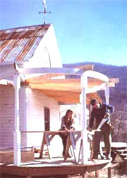 BY DON OSBY CANTILEVERED FRAMING ON DOUBLE GIRDER FASTENED WITH GALVANIZED CONNECTOR |
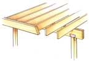 BY DON OSBY JOIST FASTENED TO DOUBLE PERIMETER JOIST ON LEDGER |
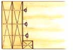 BY DON OSBY JOIST FASTENED TO DOUBLE PERIMETER JOIST ON GALVANIZED HANGERS |
|
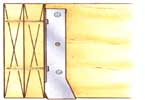 BY DON OSBY TONGUE-AND-SOCKET POST IN GRAVEL BED, SUPPORTING DOUBLE BEAMS |
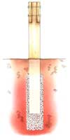 BY DON OSBY LEDGER BEAM FASTENED TO BAND JOIST WITH PERPINDICULAR FLOOR JOISTS |
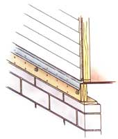 BY DON OSBY LEDGER BEAM FASTENED TO BRICK-VENEERED BAND JOIST WITH PARALLEL FLOOR JOISTS |
|
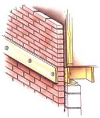 BY DON OSBY RAIL STANCHIONS NOTCHED AND BOLTED TO PERIMETER JOIST |
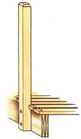 BY DON OSBY STRAIGHT PLANKING: JOIST SACING 16"-24 |
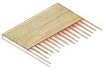 BY DON OSBY DIAGONAL PLANKING: JOIST SACING 12"-16" |
|
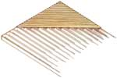 BY DON OSBY HERRINGBONE PLANKING: JOIST SACING 12" -16" |
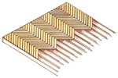 BY DON OSBY GALVANIZED SHEET-METAL FLASHING ON DOUBLE BEAM |
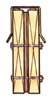 BY DON OSBY STAIRS WITH CLEATED STRINGERS, NO TOP TREAD |
|
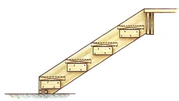 BY DON OSBY STAIRS WITH NOTCHED STRINGERS AND FLUSH TOP TREAD |
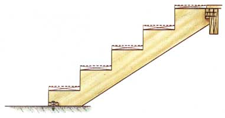 |
|